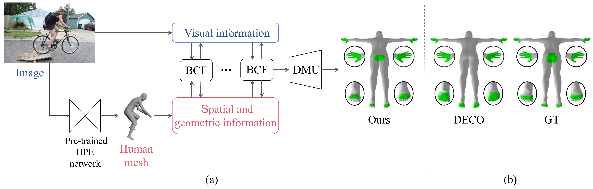
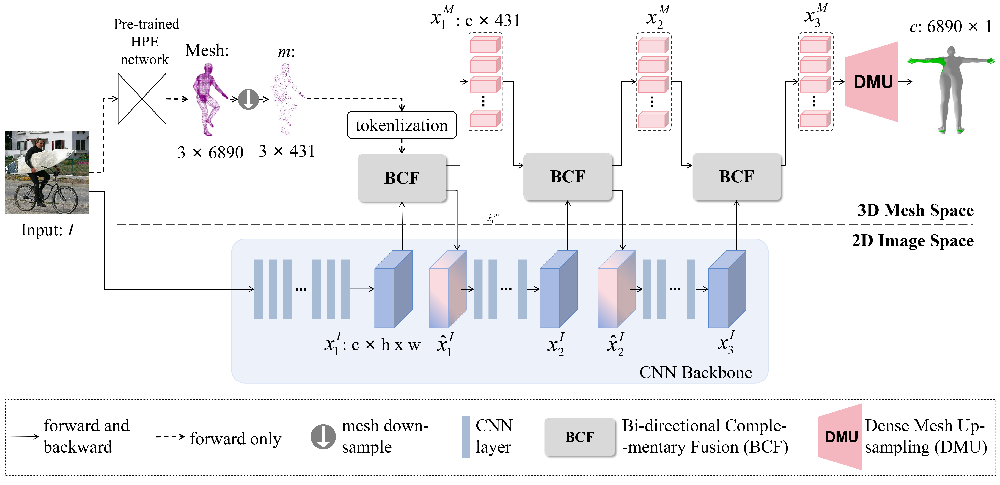
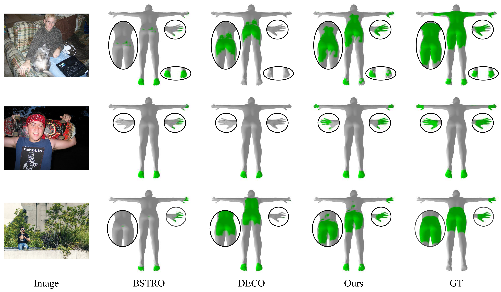
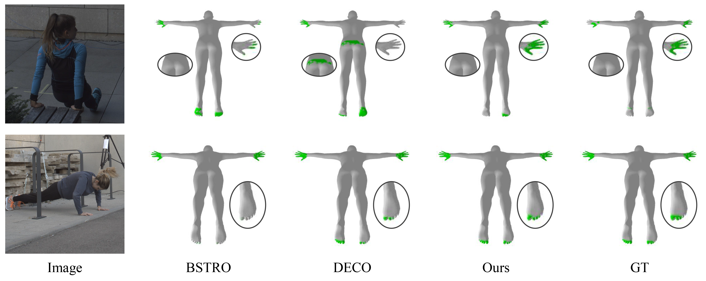

Co-HSC: Complementary Image-Mesh Fusion for Dense Human-Scene Contact Estimation
-
Minjie Liu
AI Thrust, HKUST(GZ)
-
Addison Lin Wang
AI & CMA Thrust, HKUST(GZ)
Dept. of CSE, HKUST
Abstract
Humans rely on physical contact with 3D world scenes to move and carry out tasks. This spotlights the importance of estimating 3D human-scene contact (HSC) – understanding how humans interact with their surroundings. Compared to predicting human contact with specific objects or scenes with 3D shape priors, recent research endeavors focus on 3D HSC estimation only from a single RGB image. However, images offer monocular and occluded visual information and thus cause spatial and geometric ambiguity. In this paper, we find that 3D parametric human mesh can provide spatial and geometric information simultaneously, which might be a beneficial comple- mentary to the visual information of the image. In light of this, we propose a novel two-branch framework, called Co-HSC, that subtly integrates multi- level image features and mesh features and facilitates each other’s learning when inferring dense 3D HSC from an RGB image. Specifically, we propose a Bi-directional Complementary Fusion (BCF) module to merge the multi- level image features and mesh features from the 2D Image Space and 3D Mesh Space and make them complement each other. In the BCF module, we first sample image features to 3D Mesh Space and then learn the geo- metric and global spatial information of the mesh features, complementing the local visual information of the image features. Then, the mesh features are integrated with the image features. Moreover, we introduce Dense Mesh Up-sampling (DMU) to up-sample sparse mesh features and output dense contact prediction by extracting the topology information of mesh features and utilizing the geometric mapping relationship. Experiments on the HSC datasets demonstrate that our method improves F1 by 0.04 and 0.07 on DAMON and RICH datasets, respectively
Overview
Overview of the proposed Co-HSC. It consists of two feature spaces, \ie, 2D Image Space and 3D Mesh Space. The Bi-directional Complementary Fusion (BCF) module fuses the image features and mesh features and makes them complement each other at multiple feature levels. Finally, GCN-based Dense Mesh Up-sampling (DMU) up-samples the sparse mesh features to the dense contact prediction.
Qualitative evaluation on DAMON dataset
Qualitative evaluation on DAMON dataset. The green area shows the ground-truth (GT)/predicted contact.
Qualitative evaluation on RICH dataset
Qualitative evaluation on RICH dataset. The green area shows the ground-truth (GT)/predicted contact.
BibTeX
@article{wang2024EvINR,
title={Co-HSC: Complementary Image-Mesh Fusion for Dense Human-Scene Contact Estimation},
author={Liu, Minjie and Wang, Lin},
years={2024}
}